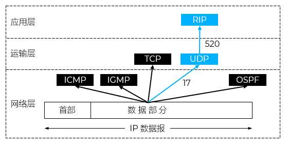
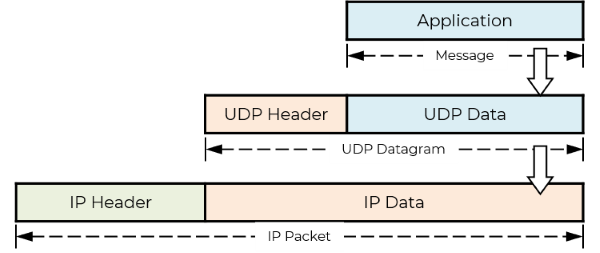
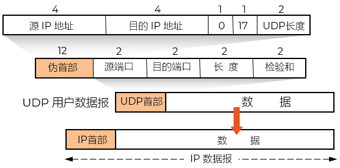
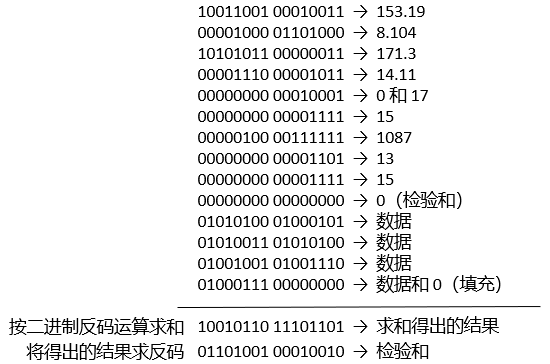
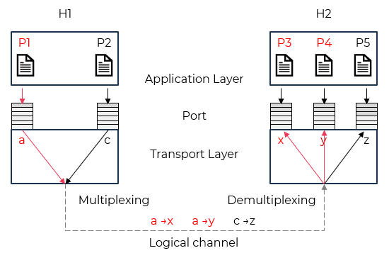
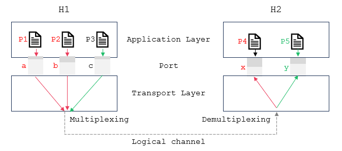

- Joke Time
- 不要跟它讲秘密
- 不要跟它吵架
- I know this great UDP joke but you might not get it.
- 尽力而为（Best Effort），其余随缘

概述 Overview
- 用户数据报 UDP - User Datagram Protocol
- 连接与状态
无连接 (Connectionless)：无需建立连接，也不维护连接状态
支持单播、组播、广播：灵活适应多种通信模式
- 可靠性
最大努力交付 (Best-effort)：不保证交付，存在丢包可能
无确认、不重传：发送后不等待确认，丢失也不重发
不排序：不保证数据按发送顺序到达
- 传输控制
无流量控制：发送方不会因接收方处理慢而减速
无拥塞控制：网络拥堵时也不会降低发送速率
- 报文处理
面向报文：不分段 (No segmenting)、不重组 (No reassembling)
无序列号：不实现序列号机制
- 首部开销
极小开销：首部仅 8 Bytes，远小于 TCP
简单方便；不可靠
U·D·P = Ultra Delightful Prankster - 超可爱捣蛋鬼
不可靠 ≠ 不能用
- RIP - Routing Information Protocol
- DNS - Domain Name System，域名系统
- DHCP - Dynamic Host Configuration Protocol，动态主机配置协议
- SNMP - Simple Network Management Protocol，简单网络管理协议
- TFTP - Trivial File Transfer Protocol，简单文件传输协议
- NFS - Network File System，网络文件系统；早期版本
- VoIP - Voice over IP及实时音视频通信
- 物联网 - ioT
- 流媒体 - Streaming Media
- 多播/组播应用 - Multicast
- 游戏通信 - Online Gaming



- 网络层协议
- UDP 提供的服务太简单
- 协议定位不同
RIP 是简单的距离矢量协议，路由信息更新频繁，且对实时性要求较高(TCP 的三次握手和重传机制有延迟)
OSPF 是复杂的链路状态协议，需要更精细的控制
- TCP 的重传机制太笨重
TCP 如果丢包，会从头开始重传整个窗口的数据
OSPF 有自己的确认与重传机制（如 LSAck 显式确认、邻居状态机、定期刷新 LSA）
OSPF 只需要重传丢失的那一条 LSA（链路状态通告），而不是整个数据库
- TCP 连接开销大
OSPF 需要和多个邻居建立邻接关系（比如一个路由器有 10 个邻居）。如果每个邻居都建一个 TCP 连接，开销巨大
OSPF 直接使用 IP 组播（224.0.0.5 和 224.0.0.6），效率极高
- TCP 面向字节流
OSPF 面向报文(Hello、DD、LSR、LSU、LSAck)
报文 Packet
- UDP 是面向报文 Message 的协议，一次发送一个完整的报文；不分组
- UDP 将应用层的报文 Message/Data 加上 UDP 首部 Header 后形成数据报 UDP datagram
- 首部固定 8 Bytes - 开销小
- 2 Bytes
- 在需要对方回信时选用。不需要时可用全 0
- 2 Bytes
- 终点交付报文时必须使用
- 2 Bytes
- UDP 用户数据报的长度，包括首部和数据
- 最小值是 8（仅有首部）
- 数据报的长度是 0x0020 → (0020)16 = 32 Bytes
- 数据报的首部是 8 Bytes
- 所以数据报的数据部分：32 - 8 = 24 Bytes
- 检验和 CheckSum
- 2 Bytes
- 检测 UDP 用户数据报在传输中是否有错。有错就丢弃
- 伪首部：源IP地址、目标IP地址、IP协议号17、UDP长度和填充
- 校验内容：伪首部 + UDP首部 + UDP数据
- 发送方
- 填上伪首部：不是真正发送的数据，仅用于 UDP 检验和的计算
- 全0填充校验和字段
- 伪首部+首部+数据三部分采用二进制反码求和
- 求和结果填入校验和字段并发送UDP报文
- 注意：最高进位必须加进去
- 接收方
- 填上伪首部
- 伪首部 + 首部 + 数据三部分采用二进制反码求和
- 结果全为 1 则无差错；否则丢弃
- 数据准备
- 红色数字部分：伪首部保留字段，必须为 0
- 绿色数字部分：校验和预填充，求得结果后再回填
- 蓝色数字部分：0 bit 填充，保证总长度为偶数字节，以便按 16 位求和
- 以 2 Bytes 为单位计算
- 详细过程 - 2组2组的加，有进位就加回去
- 报文大小
- 若报文太长，IP 层在传送时可能要进行分片，形成多个 IP 分组 Packets
- 若报文太短，会使 IP 数据报的首部的相对长度太大，降低 IP 层的效率
- 受网络层 1500 Bytes 的 MTU 限制，建议应用层报文大小 ≤ 1472 Bytes，避免分片

| 2 Bytes | 2 Bytes | 2 Bytes | 2 Bytes | |
| 源端口 | 目标端口 | 长度 | 校验和 | 数据 |
| Header | Data | |||

二进制反码求和：在二进制加法的基础上多了一个规则：产生的进位 Carry，不丢弃，而是加到最低位（第0位）- 循环进位 End-around Carry
运算过程：按位相加 → 循环进位 → 最终取反
| 153.19.8.104 | |||
| 171.3.14.11 | |||
| 00000000 | 17 | 15 = 8+7 | |
| 1087 | 13 | ||
| 15 = 8+7 | 00000000 00000000 | ||
| data | data | data | data |
| data | data | data | 00000000 |

10011001 00010011 第1组
+00001000 01101000 第2组
=10100001 01111011
+10101011 00000011 第3组
...
工作模式 Mode
- 一个源端口 → 多个目的端
单播 Unicast- 循环发送
广播 Broadcast - 向所有主机发送
组播 Multicast - 推荐；高效
- 所有数据包都从同一个源 IP + 源端口发出
- 接收方看到的源地址一致，便于回信
- 典型应用
- RIP组播
- 视频直播推流
- 广播通知系统
- Web 浏览器访问多个服务（DNS、HTTP/3的QUIC）
- a广播，x、y接收
- 多个源端口 → 一个目的端口
- 多个客户端各自创建 UDP socket（可能使用不同源端口），向同一个服务器 IP:Port 发送数据
- 典型应用
- 多人聊天室/即时通讯
- 文件上传服务
- 在线游戏服务器
- 物联网设备上报数据
- a、b发送，x接收


小结 Summary
- UDP 特点
面向报文，封装为数据报
无连接，不提供可靠传输
传输效率高
- UDP 报文格式
- UDP 应用
作业 Homework
- 翻译
Source Port：an optional field, when meaningful, it indicates the port of the sending process, and may be assumed to be the port to which a reply should be addressed in the absence of any other information.
If not used, a value of zero is inserted.
Destination Port：has a meaning within the context of a particular internet destination address.
Length is the length：in octets of this user datagram including this header and the data. This means the minimum value of the length is eight.
Checksum：the 16-bit one's complement of the one's complement sum of a pseudo header of information from the IP header, the UDP header, and the data, padded with zero octets at the end (if necessary) to make a multiple of two octets.
- Extending Reading：User Datagram Protocol (UDP)
- Extending Reading：Multiplexing
- Extending Reading：RFC 768